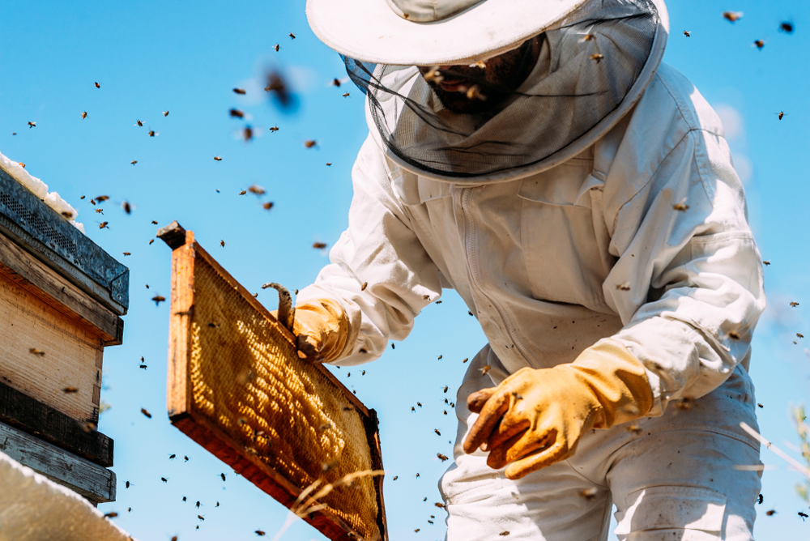
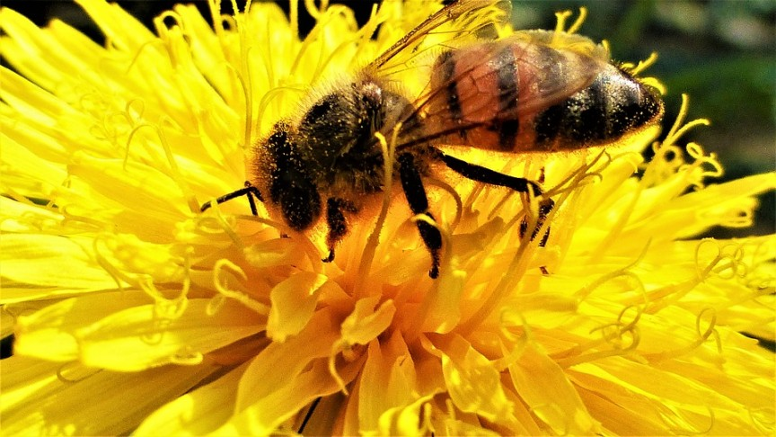
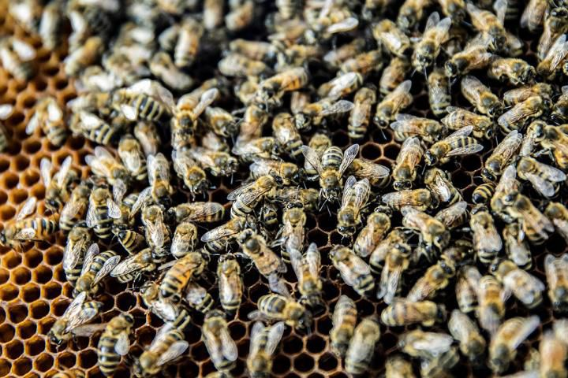
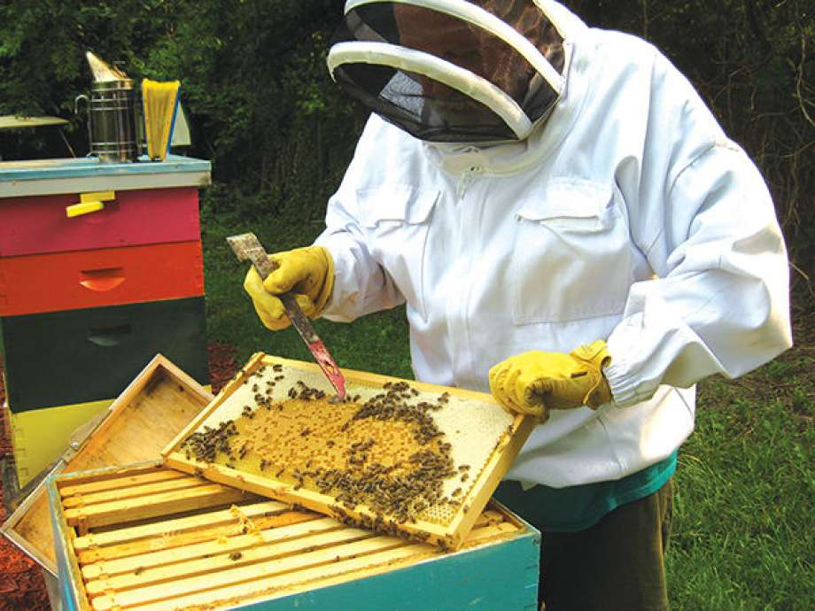
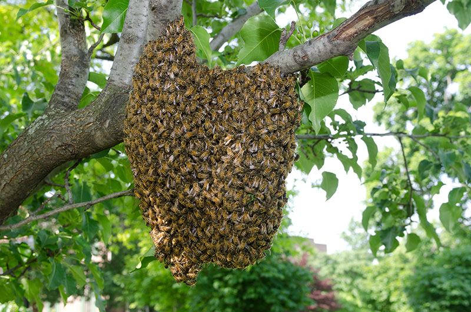
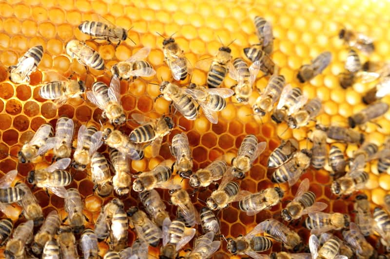
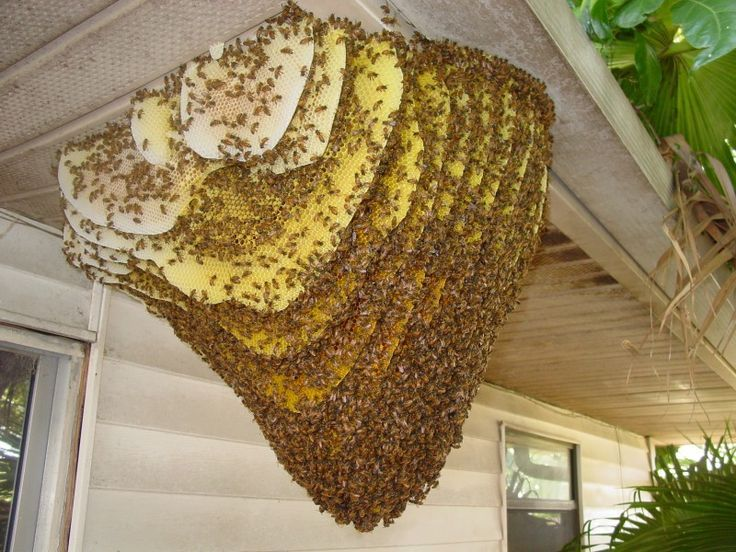
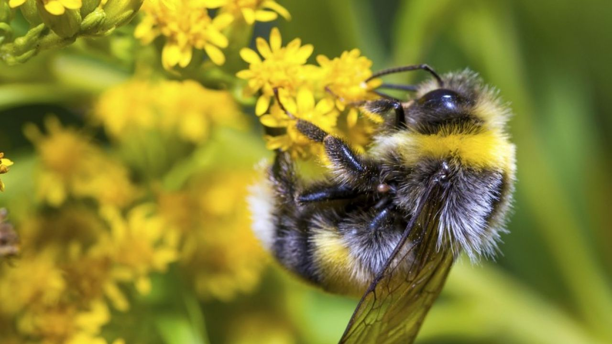
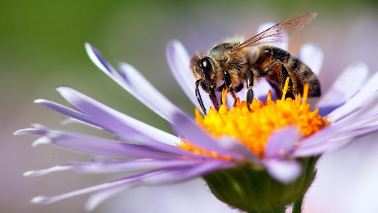

Need Bee Removal?

Call an expert bee removal service that can relocate the honey bee colony safe and alive. We are trained and registered beekeepers who have actually been carrying out bee removal services for 20 years. We utilize sophisticated innovation to precisely locate, size, and choose the best removal procedure for your scenario. The removal service includes removal of all colony functions, not just the bees. We remove all the comb, wax, debris, and dripping honey; and eliminations can be quite unpleasant for an untrained person.
Honey Bee Importance

Honey bees, or the western honey bee in particular, is known scientifically as Apis mellifera. Lots of agricultural crops, on the order of $14 billion dollars worth, depend upon domesticated bee hives to assist with pollination, and some crop, such as almonds, are 100% dependent upon the honey bee for pollination. In a role more familiar to most, honey bees also gather and focus nectar in the production of honey.
What to do?

Keep your distance from the swam of honey bees. For an experienced keeper, removing the bees can be dangerous. You should call a professional that knows what they are doing and can remove the bees safely and a professional that will keep the bees alive. We are seasoned veterans when it come to bee rescue and removal. Many don’t think of the mess that is accompanied with removing a bee hive. We will take care of everything from moving the swarms to cleaning up all aspects of the hive.
What not to do?

Don’t have the swarm of honey bees exterminated. Honey bees are vital any ecosystem and in the last 20 years, the bee population has been declining. Many people will attempt to kill the bees with insect spray, but that is a bad call. It could kill or just irritate the swarm putting that person in danger. Don’t try to aggravate the bees in anyway because once they sense a threat, they will sting you. Again, call a company that is professional equipped to relocate the swarm of bees.
Identifying a swarm

Notice a big dark cluster of bugs suddenly hanging from a tree branch, fence, ladder, or woodpile in your backyard? That is a swarm of bees! Please, whatever you do, don’t eliminate them– many of our beekeepers would be delighted to move them to a new house for you! Chances are an eager beekeeper will reveal up within hours of your call. Under ideal conditions, a strong, recognized honey bee colony will partition, and several swarms will leave the hive. It is their method of reproducing. A swarm may cluster for a while on an exposed tree limb or bush near the old hive while scout bees search for an ideal location to establish a long-term new house.
Bees Swarm Outside

The most common place for a swarm or colony to be found is outside. A colony can be as big as 50,000+ bees or as little as 20,000 bees. Generally we discover them somewhere in between this number. Outside removals are most common and have typically a different process compared to an indoor removal. This removal consists of the following:
- locate the colony/swarm
- block off other areas the bees might try to enter
- locate queen bee and place into mobile hive (the other bees will follow)
- secure the hive box once majority of bees have entered
- clean the previous living space of the bees
- feed the bees in the hive box because the colony will be tired from the removal
- deliver bees to pollination farm
Bees Swarm Inside

Having bees inside the home or other structures changes the dynamics of the bee removal. We must be careful to not allow bees to venture further into the structure and must be sure that the bees are completely removed. Close quarters also means that you may not have anywhere to escape to if the bees are agitated. That is why a professional bee keep is recommended because they come with the experience and equipment needed to preform the rescue safely. An indoor removal consists of:
- locating the main location of the swarm/colony
- block off other locations of the structure
- locate queen and place her into the mobile hive
- secure hive once the rest of the colony has entered
- clean previous living space of the bees
- remove any drywall or materials of the structure the bees have used as their hive
- feed bees because they will be tired after the rescue
Where to find beekeepers?

Finding an experienced beekeeper is important to ensure the bee removal is done properly and that the hive will not return. Call us with any questions you may have about bee removal and rescue. We’re here to help with all bee removal situation big or small. Check out our service map below to see if we can help!